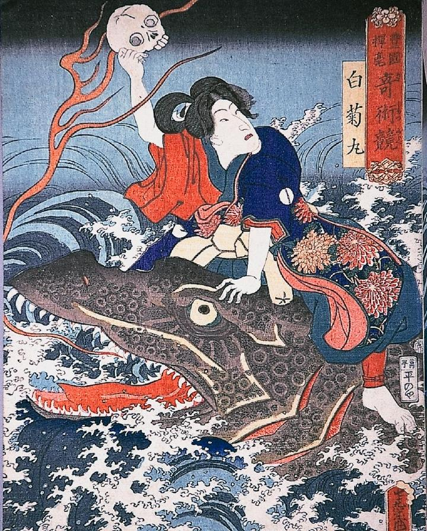

海中の怪魚に跨る白菊丸。怪魚は口から火炎を吐き出している。白菊丸は右手に髑髏を持ち高く掲げている。
著作者：歌川国貞／出典：親書誌：A963_ferenchopp_0001：奇術競白菊丸；キジュツクラベシラギクマル／日付：2011／資源識別子：A963_ferenchopp_0001_0001_0000
Copyright (c)2010- International Research Center for Japanese Studies, Kyoto, Japan. All rights reserved.